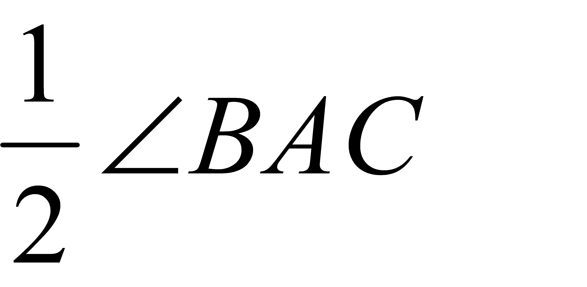
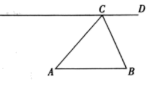
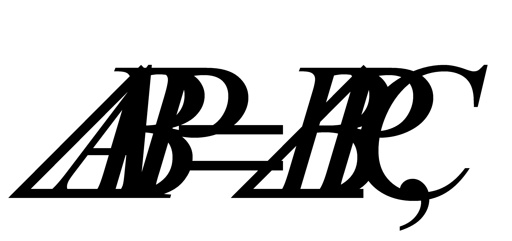
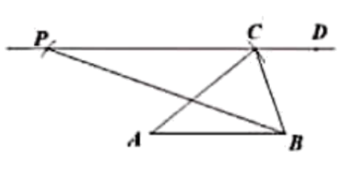
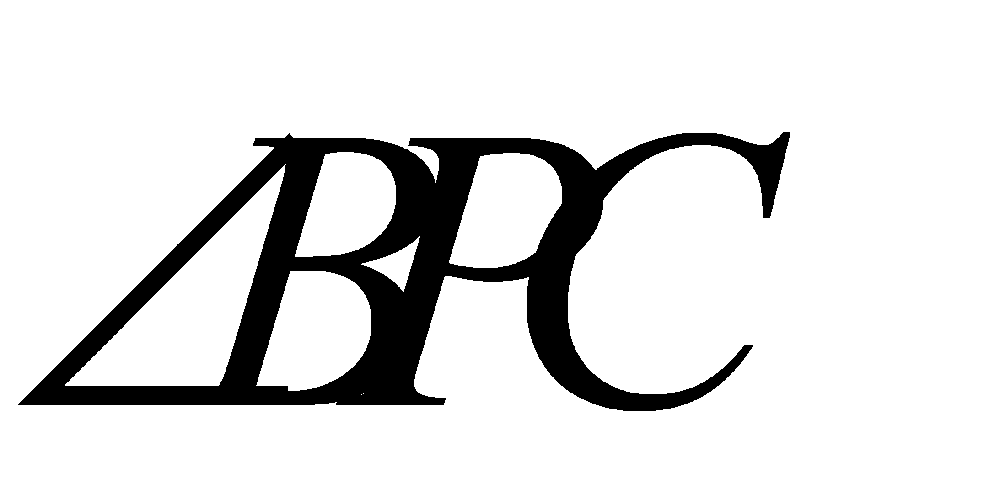

2020年北京市中考数学试题 · 数学解答题 第20题 · 对应解析
20.已知：如图，ABC为锐角三角形，AB=BC，CD∥AB．
求作：线段BP，使得点P在直线CD上，且∠ABP=

．作法：①以点A为圆心，AC长为半径画圆，交直线CD于C，P两点；②连接BP．线段BP就是所求作线段．
（1）使用直尺和圆规，依作法补全图形（保留作图痕迹）
（2）完成下面的证明．
证明：∵CD∥AB，
∴∠ABP= ．
∵AB=AC，
∴点B在⊙A上．
又∵∠BPC= ∠BAC（ ）（填推理依据）
∠BAC（ ）（填推理依据）
∴∠ABP=∠BAC

【答案】（1）见解析；（2）∠BPC，在同圆或等圆中同弧所对的圆周角等于它所对圆心角的一半
【解析】
【分析】
（1）按照作法的提示，逐步作图即可；
（2）利用平行线的性质证明：

再利用圆的性质得到：∠BPC=∠BAC，从而可得答案．【详解】解：（1）依据作图提示作图如下：

（2）证明：∵CD∥AB，
∴∠ABP=

．∵AB=AC，
∴点B在⊙A上．
又∵∠BPC=∠BAC（在同圆或等圆中同弧所对的圆周角等于它所对圆心角的一半． ）（填推理依据）
∴∠ABP=∠BAC
故答案为：∠BPC；在同圆或等圆中同弧所对的圆周角等于它所对圆心角的一半．
【点睛】本题考查的是作图中复杂作图，同时考查了平行线的性质，圆的基本性质：在同圆或等圆中同弧所对的圆周角等于它所对圆心角的一半．掌握以上知识是解题的关键．